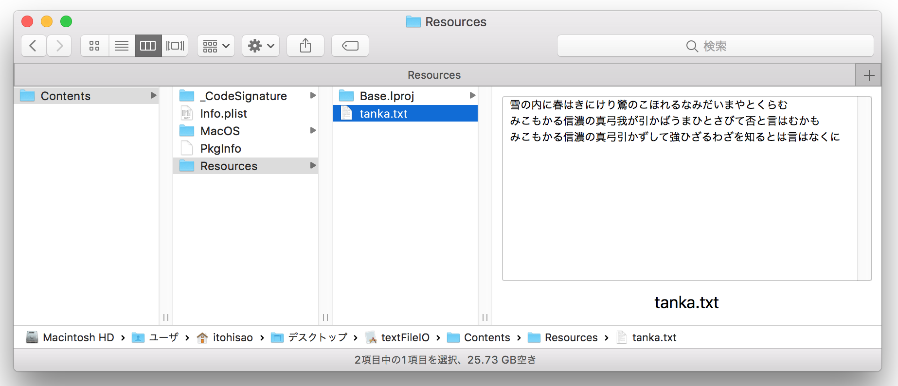
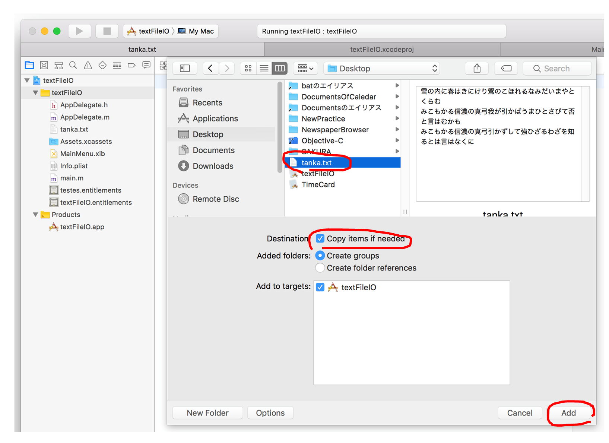
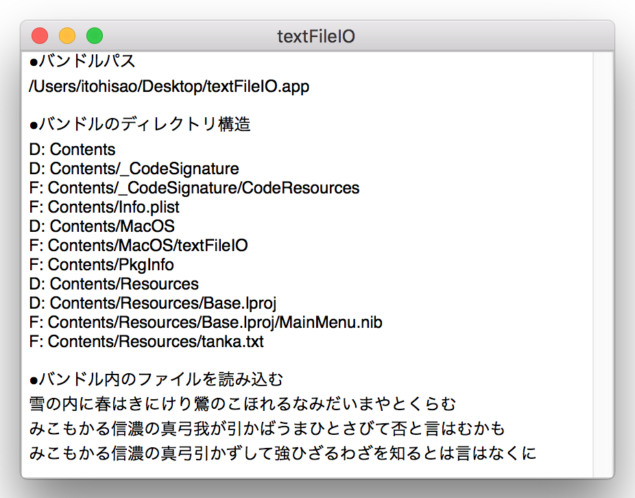

バンドルのリソースにファイルを格納する
アプリケーションバンドルは、Xcodeでプロジェクトを作成したとき自動的に作成される。Finder上では、.app というサフィックスを持ったファイルに見えるが、実体はディレクトリ構造をパッケージしたもので、アプリケーションが利用するリソース（クラス、Xib、画像など）が格納されている。Contentsディレクトリをルートにした標準的なフォルダ構成を持つ。
ファイルのアイコンをクリックするとアプリケーションが起動する。
アプリケーションバンドル（.appファイル）は、普通のファイルと同じように、コピーや移動ができる。
バンドルの格納パスは、移動した先のディレクトリに合わせて変更される。
バンドル（.appファイル）の格納パスを求める
バンドル内のディレクトリ構成を確認する
XcodeのProject Navigatorにある .appファイルをFileメニュー→Show in Finderで開く。
Finderから .appファイルをコンテキストメニューで開き「パッケージ内容の表示」を選ぶ
次のようなFinder画面が現れ、パッケージの内容を確認することができる。

バンドルにファイルを作成する
アプリケーションバンドルには、読み込み専用でマスター的なデータを格納することができる。
ファイルをアプリケーションバンドルに取り込む方法
XcodeのProject Nvigator → Fileメニュー → Add Files to プロジェクト
Finderが表示されるので、任意のファイルを選択してAddを実行する。オプションでCopy items if needed をチェックするとファイル自体がバンドル内にコピーされる。チェックしないとリンクのコピーとなる。
ファイルは、Contents/Resources/ の直下に格納される。

バンドル内のファイルをアプリケーションに読み込む方法
[補足]
バンドル内に書き込みしようとすると、権限がないということでエラーとなる。
Error Domain=NSCocoaErrorDomain Code=513 You don’t have permission to save the file master.txt in the folder Resources
サンプルアプリケーション
・バンドルパス及びディレクトリ構成を表示する
・バンドル内に格納したテキストファイルを読み込む
